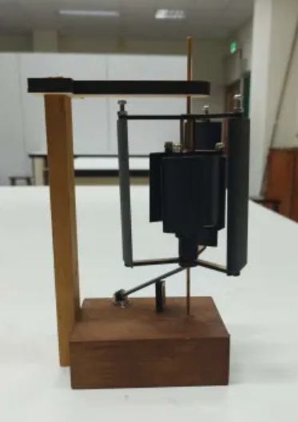
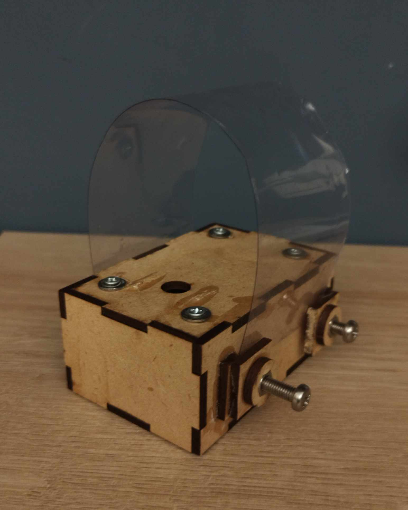
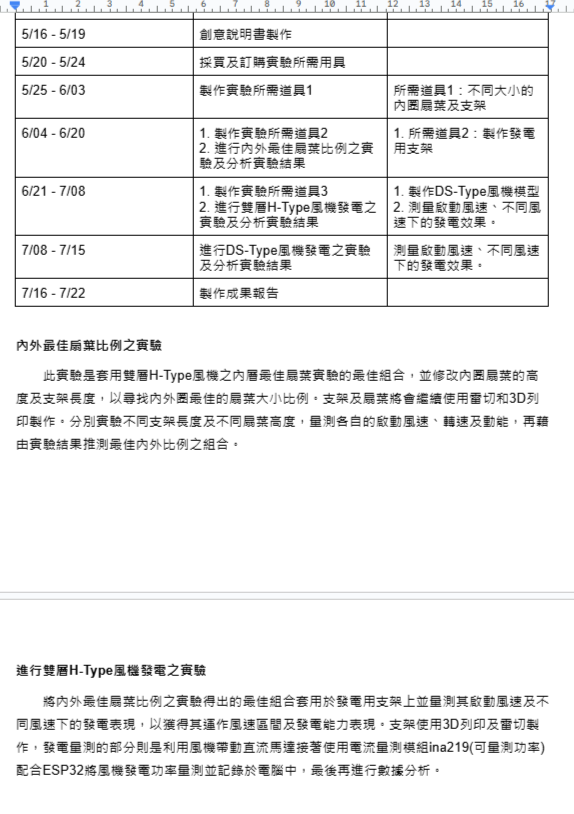

本次科展我們設計了一款雙層H-Type垂直軸風機，並研究最適合作為內層扇葉的類型，以降低啟動風速並提升性能。透過資料蒐集與模型製作，我們選擇對稱翼型、非對稱翼型及J型葉片作為內層扇葉進行測試，最終發現J型葉片在啟動風速及動能表現上最優。比賽過程中，我們克服了文獻搜尋困難，透過跨語言研究提升專業知識，並在競賽交流中獲得寶貴經驗。最終，我們在新北科展獲得特優，並持續改良設計，為後續競賽(旺宏科學獎)做準備。
更多資訊
簡介
星詠みです!!
我是Yun-Chih Chung，來自台灣新北市的高中生。
uwu
我是一名高中生，主要參與專題製作與團隊競賽，對科技創新與實作有興趣。主要負責工作為產品構思與機構設計，並另外具有Python及Arduino專案的開發經驗，並參與校內午餐系統修改的工作。並具有多項開發用軟體的使用能力(AutoCad、Python、Arduino
Ide、Figma)。主要做過能源相關議題的專案，如：雙層H-Type風機設計、地下水管自動抓漏等。下方的表格有我參與過的一些競賽(點擊比賽名稱可以跳轉至個別的詳細介紹)。
| 比賽名稱 | 等級 | 名次 | 專題名稱 | 貢獻值 | 關鍵字 |
|---|---|---|---|---|---|
| 新北科展工程學科(一) | 縣市 | 特優 | 雙層H-Type風機內層最佳扇葉類型之探究 | 主題發想、製作實驗模型、設計實驗、實驗報告撰寫 貢獻值：65% |
垂直軸風機、J型扇葉、綠能 |
| 2023年台灣永續能源創意實作競賽-高中職綠能創新組 | 全國 | 銅牌獎 | 地下水管自動抓漏 | 主題發想、製作實驗模型、專案領導、報告撰寫 貢獻值：50% |
AIoT、遠端自動偵漏、機器學習 |
| 旺宏科學獎 | 全國 | 佳作 | 雙層H-Type風機之實作 | 主題發想、製作實驗模型、報告撰寫 貢獻值：70% |
垂直軸風機、J型扇葉、綠能 |
| 2022iSTEAM PowerTech青少年科技創作競賽全國賽-高中職單項組-三分高手 | 全國 | 冠軍 | 自主學習 | 主題發想、設計比賽用機構與造型、自主學習規劃 貢獻值：65% |
社會議題、時間規劃、設計思考 |
| 網頁實作 | 、、 | 、、 | 自主學習 | 整體網頁開發及設計 貢獻值：100% |
html、css、js、自主學習規劃 |
專題與自主學習
新北科展工程學科(一)

2023年台灣永續能源創意實作競賽-高中職綠能創新組
我們開發了一套機器學習與頻譜分析系統，用於自動偵測與定位地下水管破裂。系統透過聲音感測器與 ESP32 傳輸數據，並利用 AI
分析聲紋變化來判斷漏水情況。我負責計劃書撰寫、感測器數據整理、資料回傳開發，並協助AI 模型訓練。雖然因資源受限影響準確度，但我們仍獲得銅牌獎。這次比賽讓我學習到能源技術與 AI
應用，未來希望進一步優化技術，提升偵測效能。
更多資訊
更多資訊

折頁 3
此專案是延續科展成果，制定後續研究計畫，對原先設計出來的雙層H-Type風機做更加深入的效能分析，進行內外扇葉的比例配置、發電實驗、與市面流通機型比對。
更多資訊
更多資訊
